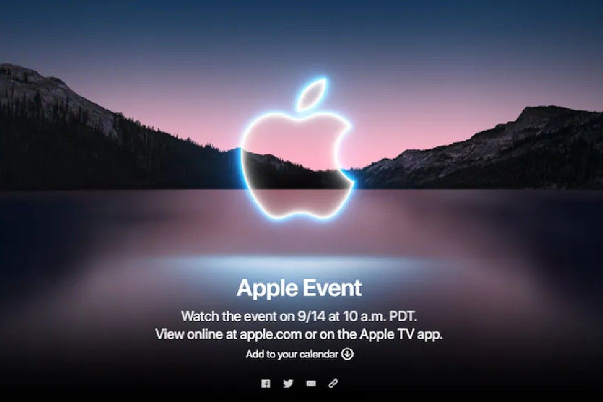
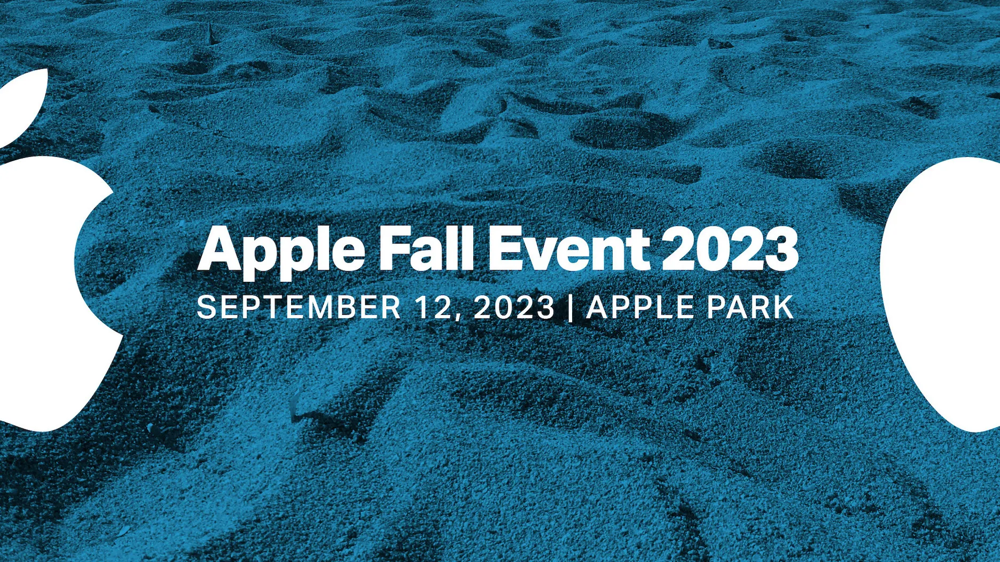
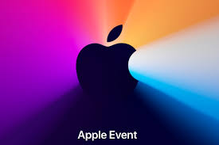
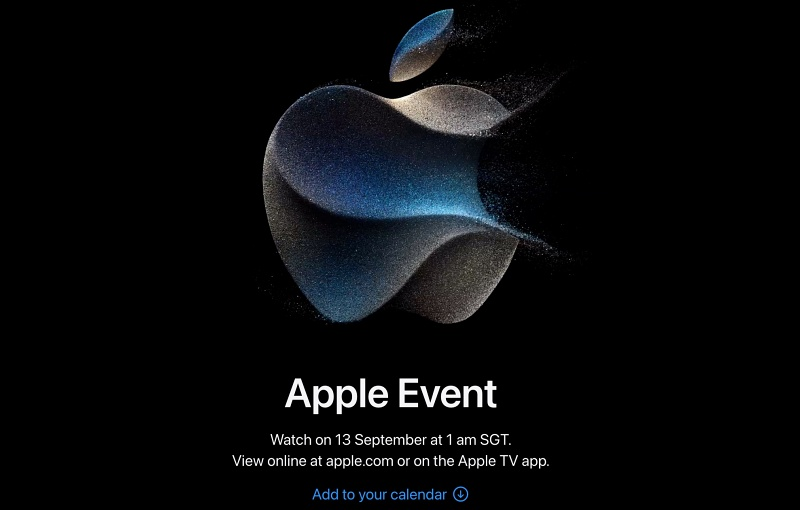
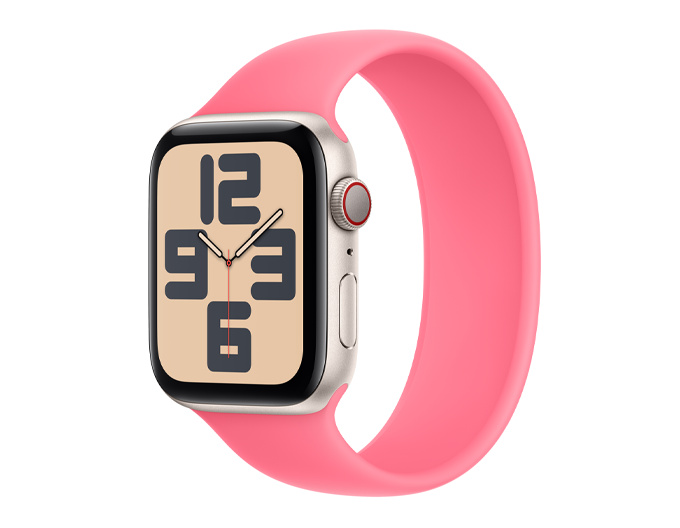
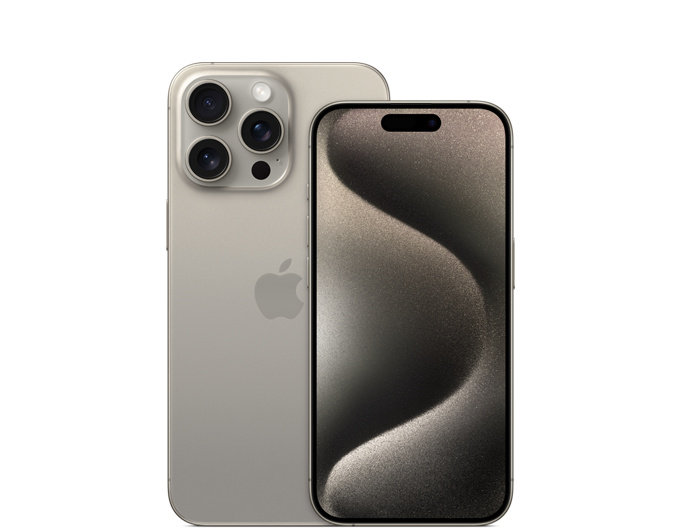
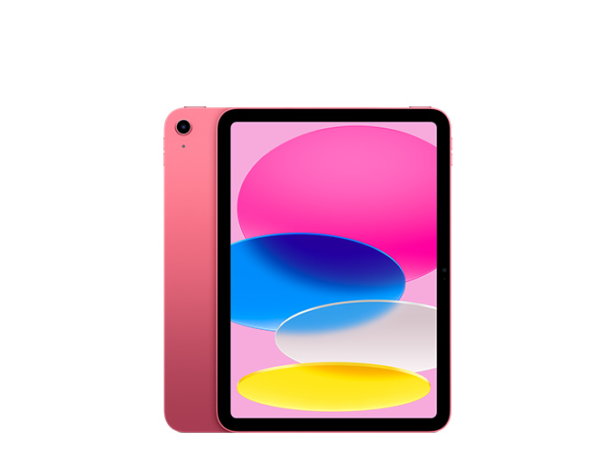

Apple is an American multinational corporation and technology company hesdquartered in Cupertino ,california ,in Siliion Valley.
it designs ,develops ,and sells consumer electronics ,Computer software,and online service .device include the iphone ,ipad,Mac,Apple watch ,vision Pro ,and Apple Tv;operating systems include ios,ipads,and macOS;and software application and services include itunes,
icloud,Apple music,and Apple TV+.
Apple was foundes as apple computer company on April 1,1976,to produce and market steve wozniak;s Apple I personal Computer.The company was incorporated by wozniak and steve jobs in 1977.
Apple Inc. is structured into several key sections ,each playing a crucial role in its operations.The product design and development section focuses on creating and enhancing Apple's innovative products,like the iphine,Mac,and ipad.The software Engineering section develops the operating systems and software application that power Apple's devices.Operation and supply chain management ensures efficient production,logistics,and distribution.The marketing and Communication section handles advertising ,public relations,and brand management.Retail and customer support provides direct consumer interaction and sevice through Apple's stores and support centres.additionally ,the corporate function section includes finance,legal,human resource and administrative support,while the Research and Development section drives innovation and technological advancement.
click here to get detail informationCUPERTINO, CALIFORNIA Apple today announced financial results for its fiscal 2024 second quarter ended March 30, 2024. The Company posted quarterly revenue of $90.8 billion, down 4 percent year over year, and quarterly earnings per diluted share of $1.53. “Today Apple is reporting revenue of $90.8 billion for the March quarter, including an all-time revenue record in Services,” said Tim Cook, Apple’s CEO. “During the quarter, we were thrilled to launch Apple Vision Pro and to show the world the potential that spatial computing unlocks. We’re also looking forward to an exciting product announcement next week and an incredible Worldwide Developers Conference next month. As always, we are focused on providing the very best products and services for our customers, and doing so while living up to the core values that drive us.” “Thanks to very high levels of customer satisfaction and loyalty, our active installed base of devices has reached a new all-time high across all products and all geographic segments, and our business performance drove a new EPS record for the March quarter,” said Luca Maestri, Apple’s CFO. “Given our confidence in Apple’s future and the value we see in our stock, our Board has authorised an additional $110 billion for share repurchases. We are also raising our quarterly dividend for the twelfth year in a row.”







| Shop and Learn | Account | Apple stores |
|---|---|---|
| store | manage your Apple ID | Find a store |
| Mac | Apple store Account | Genius bar |